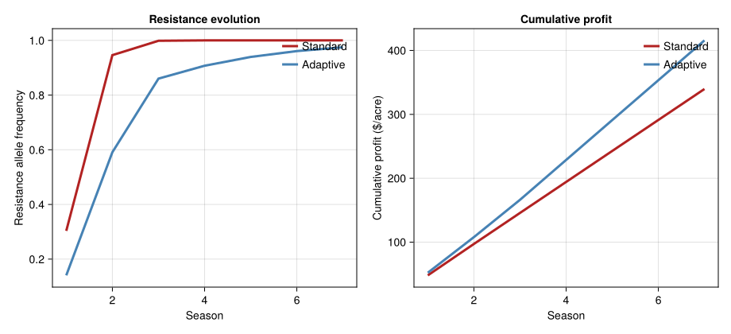

Pesticide Resistance Optimization
Simon Frost
- Background
- Model Parameters
- Hardy-Weinberg Resistance Gene
- Pesticide Kill Function
- Alfalfa Plant Growth Model
- Weevil Population Dynamics
- Economic Model
- Case 1: Standard Policy (Ignoring Resistance)
- Case 2: Adaptive Policy (Resistance-Aware)
- Comparing Long-Term Profits
- Resistance Gene Frequency Trajectories
- Key Insights
Primary reference: (Gutierrez et al. 1979).
Background
This vignette couples PBDM population dynamics with Hardy-Weinberg genetics and economic optimization to model the evolution of pesticide resistance in the Egyptian alfalfa weevil (Hypera brunneipennis) feeding on alfalfa (Medicago sativa). The model asks: what is the optimal pesticide spray schedule when resistance will inevitably evolve?
Two cases are contrasted: 1. Standard policy: spray the same optimal pattern every year (ignoring resistance) 2. Adaptive policy: adjust spraying based on current resistance level
Reference: Gutierrez, A.P., Regev, U., and Shalit, H. (1979). An economic optimization model of pesticide resistance: alfalfa and Egyptian alfalfa weevil — an example. Environmental Entomology 8:101–107.
Model Parameters
using PhysiologicallyBasedDemographicModels
using CairoMakie
# --- Physical time ---
const BASE_TEMP = 5.5 # °C base temperature for both plant and weevil
const TIME_UNIT = 56.0 # DD per time period (Δt)
const HARVEST_DD = 550.0 # DD from last frost to harvest
const N_PERIODS = 12 # Time periods per season (12 × 56 = 672 DD)
const LARVAL_DD = 336.0 # DD for larval development (6 time periods)
# --- Development rate ---
weevil_dev = LinearDevelopmentRate(BASE_TEMP, 30.0)LinearDevelopmentRate{Float64}(5.5, 30.0)Hardy-Weinberg Resistance Gene
Resistance is controlled by a single gene with two alleles. We use the package’s DialleleicLocus to track the resistant allele frequency W and compute Hardy-Weinberg genotype frequencies:
# --- Genetics (using package API) ---
W_init = 0.01 # Initial resistant allele frequency
# Create a diallelic locus (dominance=0.5 for codominant)
locus_init = DialleleicLocus(W_init, 0.5)
freq = genotype_frequencies(locus_init)
println("Initial state (W = $W_init):")
println(" Homozygous resistant (RR): $(round(freq.RR, digits=6))")
println(" Heterozygous (RS): $(round(freq.SR, digits=6))")
println(" Homozygous susceptible (SS): $(round(freq.SS, digits=6))")Initial state (W = 0.01):
Homozygous resistant (RR): 0.0001
Heterozygous (RS): 0.0198
Homozygous susceptible (SS): 0.9801Pesticide Kill Function
The pesticide mortality function differs by genotype. Kill rates follow exponential dose-response curves.
# Kill rate parameters (α) from Appendix 1
# κ(x,W) = W² exp(-α₁x) + 2W(1-W) exp(-α₂x) + (1-W)² exp(-α₃x)
# where x = pesticide dose (ounces/acre)
# Adult kill parameters
const ALPHA_ADULT = Dict(
:RR => 0.0, # Homozygous resistant: immune to pesticide
:RS => 0.095, # Heterozygous: partial kill
:SS => 0.19, # Homozygous susceptible: maximum kill
)
# Larval kill parameters
const ALPHA_LARVAL = Dict(
:RR => 0.0, # Immune
:RS => 0.14, # Partial
:SS => 0.28, # Maximum
)
"""
Compute population survival fraction after pesticide application.
"""
function pesticide_survival(dose::Float64, W::Float64;
alpha=ALPHA_ADULT)
freq = genotype_frequencies(W)
survival = freq.RR * exp(-alpha[:RR] * dose) +
freq.SR * exp(-alpha[:RS] * dose) +
freq.SS * exp(-alpha[:SS] * dose)
return survival
end
# Demonstrate dose-response at different resistance levels
println("\nAdult survival after 10 oz/acre at different W:")
println("W (resist.) | Survival | Effective kill")
println("-"^50)
for W in [0.01, 0.05, 0.10, 0.30, 0.50, 0.75, 0.95]
surv = pesticide_survival(10.0, W)
println(" $(round(W, digits=2)) | $(round(surv, digits=3)) | $(round((1-surv)*100, digits=1))%")
endAdult survival after 10 oz/acre at different W:
W (resist.) | Survival | Effective kill
--------------------------------------------------
0.01 | 0.154 | 84.6%
0.05 | 0.174 | 82.6%
0.1 | 0.201 | 79.9%
0.3 | 0.326 | 67.4%
0.5 | 0.481 | 51.9%
0.75 | 0.717 | 28.3%
0.95 | 0.94 | 6.0%Alfalfa Plant Growth Model
# Leaf dry matter growth (Eq. 7)
# L_t = L_{t-1} × (1 + γ_t) + γ'_t
# Parameters estimated from Davis, CA field data
const GAMMA_GROWTH = [0.35, 0.30, 0.25, 0.20, 0.15, 0.12,
0.10, 0.08, 0.06, 0.04, 0.02, 0.01]
const GAMMA_RESERVE = [0.5, 0.4, 0.3, 0.2, 0.1, 0.05,
0.02, 0.01, 0.0, 0.0, 0.0, 0.0]
function simulate_alfalfa(feeding_damage::Vector{Float64})
L = zeros(N_PERIODS + 1)
L[1] = 1.0 # Initial leaf mass (g/sq ft)
for t in 1:N_PERIODS
# Growth with feeding damage subtracted
wound_factor = 1.2 # ψ = 0.2 wound healing loss
damage = t <= length(feeding_damage) ? feeding_damage[t] : 0.0
L[t+1] = max(0.0, (L[t] - wound_factor * damage) *
(1 + GAMMA_GROWTH[t]) + GAMMA_RESERVE[t])
end
return L
end
# Undamaged growth
L_healthy = simulate_alfalfa(zeros(N_PERIODS))
println("\nAlfalfa growth (undamaged):")
for t in [1, 3, 6, 9, 12]
println(" Period $t ($(t*56) DD): $(round(L_healthy[t+1], digits=2)) g/sq ft")
endAlfalfa growth (undamaged):
Period 1 (56 DD): 1.85 g/sq ft
Period 3 (168 DD): 3.81 g/sq ft
Period 6 (336 DD): 6.3 g/sq ft
Period 9 (504 DD): 7.97 g/sq ft
Period 12 (672 DD): 8.54 g/sq ftWeevil Population Dynamics
# Adult weevil model (Eq. 10)
# N_{A,t+1} = N_{A,t} × κ(x_t, W_t) × (1 - 1/(12-t))
# Initial peak infestation: I₀ = 2.15 weevils/unit area
const I_0 = 2.15
const OVERWINTER_RETURN = 0.0225 # 2.25% of adults survive to next season
# Fitness cost of resistance: β = 0.9
const RESISTANCE_FITNESS_COST = 0.9
function simulate_season(W::Float64, spray_schedule::Vector{Float64},
initial_density::Float64)
# Adult population over time
N_adults = zeros(N_PERIODS)
N_adults[1] = initial_density
N_adults[2] = initial_density # Peak infestation at period 2
# Track feeding damage
feeding = zeros(N_PERIODS)
for t in 2:N_PERIODS-1
# Natural mortality (linear decline)
natural_surv = max(0.0, 1.0 - 1.0 / (12 - t + 1))
# Pesticide mortality
dose = t <= length(spray_schedule) ? spray_schedule[t] : 0.0
pest_surv = pesticide_survival(dose, W)
N_adults[t+1] = N_adults[t] * natural_surv * pest_surv
# Feeding damage proportional to population
feeding[t] = N_adults[t] * 0.02 # g leaf per weevil per period
end
# Compute larval production (simplified)
total_larvae = sum(N_adults[2:7]) * 0.5 # Egg production in early periods
# --- Gene frequency change via the coupled API ---
# Wrap the diallelic locus in a `GenomeState` and apply Hardy-Weinberg
# selection through a `SelectionRule` attached to a `PopulationSystem`.
# This is equivalent to calling `selection_step!` directly, but plays
# naturally with `solve_coupled` / rule-phase composition.
gs = GenomeState(:resistance, DialleleicLocus(W, 0.5))
sys = PopulationSystem(:weevil => BulkPopulation(:weevil, initial_density);
state=[gs])
total_dose = sum(spray_schedule)
# Genotype-specific survival rates as fitness values
surv_RR = exp(-ALPHA_LARVAL[:RR] * total_dose) * RESISTANCE_FITNESS_COST
surv_RS = exp(-ALPHA_LARVAL[:RS] * total_dose)
surv_SS = exp(-ALPHA_LARVAL[:SS] * total_dose)
fitness_fn = (sys, w, day, p) -> GenotypeFitness(surv_SS, surv_RS, surv_RR)
rule = SelectionRule(:resistance, fitness_fn; name=:season_selection)
apply_rule!(rule, sys, DailyWeather(0.0, 0.0, 0.0), 1, nothing)
W_new = get_state(gs)
return (N_adults=N_adults, feeding=feeding, W_new=W_new,
total_larvae=total_larvae)
endsimulate_season (generic function with 1 method)Economic Model
# Alfalfa price function (Eq. 13, Appendix 1)
# P = U + 4.2014L + 0.2035L²
const U_PRICE = 15.1253 # $/ton for completely defoliated alfalfa
function alfalfa_price(L::Float64)
return U_PRICE + 4.2014 * L + 0.2035 * L^2
end
# Pesticide cost
const PEST_COST_BASE = 0.60 # $/ounce (periods 1-6)
function pesticide_cost(dose::Float64, period::Int)
if period <= 6
return PEST_COST_BASE * dose
else
return (PEST_COST_BASE + U_PRICE / 10 * (period - 6)) * dose
end
end
# Profit function
function season_profit(spray_schedule::Vector{Float64}, W::Float64,
initial_density::Float64)
result = simulate_season(W, spray_schedule, initial_density)
L_final = simulate_alfalfa(result.feeding)
# Revenue: price × yield (assume 1 ton/acre base)
revenue = alfalfa_price(L_final[end])
# Cost: total pesticide expenditure
cost = sum(pesticide_cost(spray_schedule[t], t) for t in 1:N_PERIODS)
return revenue - cost
end
println("\nAlfalfa economics:")
println(" Base price (no leaves): \$$(round(U_PRICE, digits=2))/ton")
println(" With full growth (L=5): \$$(round(alfalfa_price(5.0), digits=2))/ton")
println(" Pesticide cost: \$$(PEST_COST_BASE)/oz (early season)")Alfalfa economics:
Base price (no leaves): $15.13/ton
With full growth (L=5): $41.22/ton
Pesticide cost: $0.6/oz (early season)Case 1: Standard Policy (Ignoring Resistance)
The farmer applies the same optimal spray schedule every year, unaware that resistance is building.
# Optimal spray schedule from paper (Case 1): 27.11 oz total
# Concentrated in periods 1-2
standard_spray = zeros(N_PERIODS)
standard_spray[1] = 8.72 # oz/acre, period 1
standard_spray[2] = 14.67 # oz/acre, period 2
# Remaining periods: 3.72 oz distributed
standard_spray[3] = 2.0
standard_spray[4] = 1.72
println("Case 1: Standard policy (fixed schedule)")
println("="^65)
println("Season | W_start | W_end | Profit | Pest leaving")
println("-"^65)
W = W_init
density = I_0
for season in 1:7
result = simulate_season(W, standard_spray, density)
profit = season_profit(standard_spray, W, density)
println(" $(lpad(season, 2)) | $(round(W, digits=4)) | " *
"$(round(result.W_new, digits=4)) | \$$(round(profit, digits=2)) | " *
"$(round(result.total_larvae, digits=1))")
# Next season
W = result.W_new
density = max(0.5, result.total_larvae * OVERWINTER_RETURN)
endCase 1: Standard policy (fixed schedule)
=================================================================
Season | W_start | W_end | Profit | Pest leaving
-----------------------------------------------------------------
1 | 0.01 | 0.3034 | $48.09 | 1.2
2 | 0.3034 | 0.9461 | $49.13 | 0.4
3 | 0.9461 | 0.9986 | $48.56 | 1.1
4 | 0.9986 | 1.0 | $48.49 | 1.2
5 | 1.0 | 1.0 | $48.49 | 1.2
6 | 1.0 | 1.0 | $48.49 | 1.2
7 | 1.0 | 1.0 | $48.49 | 1.2Case 2: Adaptive Policy (Resistance-Aware)
The farmer adjusts spray timing and dose based on the current resistance level, optimizing long-term profit.
"""
Adaptive spray schedule: reduce dose as resistance builds,
shift timing to target vulnerable stages.
"""
function adaptive_spray(W::Float64)
schedule = zeros(N_PERIODS)
if W < 0.1
# Low resistance: standard aggressive control
schedule[1] = 8.0
schedule[2] = 12.0
elseif W < 0.3
# Moderate: reduce dose, extend timing
schedule[1] = 5.0
schedule[2] = 8.0
schedule[3] = 3.0
elseif W < 0.6
# High: switch to targeting larvae (later timing)
schedule[3] = 4.0
schedule[4] = 4.0
schedule[5] = 3.0
else
# Very high resistance: minimal pesticide, accept losses
schedule[4] = 2.0
schedule[5] = 2.0
end
return schedule
end
println("\nCase 2: Adaptive policy (resistance-aware)")
println("="^65)
println("Season | W_start | W_end | Profit | Total oz | Strategy")
println("-"^65)
W = W_init
density = I_0
for season in 1:7
spray = adaptive_spray(W)
result = simulate_season(W, spray, density)
profit = season_profit(spray, W, density)
total_oz = sum(spray)
strategy = W < 0.1 ? "aggressive" :
W < 0.3 ? "moderate" :
W < 0.6 ? "larval target" : "minimal"
println(" $(lpad(season, 2)) | $(round(W, digits=4)) | " *
"$(round(result.W_new, digits=4)) | \$$(round(profit, digits=2)) | " *
"$(round(total_oz, digits=1)) oz | $strategy")
W = result.W_new
density = max(0.5, result.total_larvae * OVERWINTER_RETURN)
endCase 2: Adaptive policy (resistance-aware)
=================================================================
Season | W_start | W_end | Profit | Total oz | Strategy
-----------------------------------------------------------------
1 | 0.01 | 0.1407 | $52.15 | 20.0 oz | aggressive
2 | 0.1407 | 0.591 | $55.76 | 16.0 oz | moderate
3 | 0.591 | 0.8602 | $58.39 | 11.0 oz | larval target
4 | 0.8602 | 0.9073 | $62.38 | 4.0 oz | minimal
5 | 0.9073 | 0.9394 | $62.37 | 4.0 oz | minimal
6 | 0.9394 | 0.9608 | $62.37 | 4.0 oz | minimal
7 | 0.9608 | 0.9749 | $62.36 | 4.0 oz | minimalComparing Long-Term Profits
println("\nCumulative profit comparison over 7 seasons:")
println("="^50)
# Case 1
W1 = W_init; d1 = I_0; cum1 = 0.0
# Case 2
W2 = W_init; d2 = I_0; cum2 = 0.0
profits_1 = Float64[]
profits_2 = Float64[]
for season in 1:7
# Case 1
r1 = simulate_season(W1, standard_spray, d1)
p1 = season_profit(standard_spray, W1, d1)
push!(profits_1, p1); cum1 += p1
W1 = r1.W_new; d1 = max(0.5, r1.total_larvae * OVERWINTER_RETURN)
# Case 2
spray2 = adaptive_spray(W2)
r2 = simulate_season(W2, spray2, d2)
p2 = season_profit(spray2, W2, d2)
push!(profits_2, p2); cum2 += p2
W2 = r2.W_new; d2 = max(0.5, r2.total_larvae * OVERWINTER_RETURN)
end
println("Season | Standard | Adaptive | Advantage")
println("-"^50)
for s in 1:7
adv = profits_2[s] - profits_1[s]
println(" $s | \$$(round(profits_1[s], digits=2)) | " *
"\$$(round(profits_2[s], digits=2)) | \$$(round(adv, digits=2))")
end
println("-"^50)
println("Total | \$$(round(cum1, digits=2)) | \$$(round(cum2, digits=2)) | " *
"\$$(round(cum2 - cum1, digits=2))")Cumulative profit comparison over 7 seasons:
==================================================
Season | Standard | Adaptive | Advantage
--------------------------------------------------
1 | $48.09 | $52.15 | $4.06
2 | $49.13 | $55.76 | $6.63
3 | $48.56 | $58.39 | $9.83
4 | $48.49 | $62.38 | $13.9
5 | $48.49 | $62.37 | $13.89
6 | $48.49 | $62.37 | $13.88
7 | $48.49 | $62.36 | $13.88
--------------------------------------------------
Total | $339.73 | $415.79 | $76.06Resistance Gene Frequency Trajectories
println("\nResistance evolution comparison:")
println("Season | Standard W | Adaptive W | Difference")
println("-"^55)
W1 = W_init; W2 = W_init
d1 = I_0; d2 = I_0
for season in 1:10
r1 = simulate_season(W1, standard_spray, d1)
spray2 = adaptive_spray(W2)
r2 = simulate_season(W2, spray2, d2)
println(" $(lpad(season, 2)) | $(round(W1, digits=4)) | " *
" $(round(W2, digits=4)) | $(round(W1 - W2, digits=4))")
W1 = r1.W_new; d1 = max(0.5, r1.total_larvae * OVERWINTER_RETURN)
W2 = r2.W_new; d2 = max(0.5, r2.total_larvae * OVERWINTER_RETURN)
endResistance evolution comparison:
Season | Standard W | Adaptive W | Difference
-------------------------------------------------------
1 | 0.01 | 0.01 | 0.0
2 | 0.3034 | 0.1407 | 0.1627
3 | 0.9461 | 0.591 | 0.3551
4 | 0.9986 | 0.8602 | 0.1384
5 | 1.0 | 0.9073 | 0.0927
6 | 1.0 | 0.9394 | 0.0606
7 | 1.0 | 0.9608 | 0.0392
8 | 1.0 | 0.9749 | 0.0251
9 | 1.0 | 0.9839 | 0.0161
10 | 1.0 | 0.9897 | 0.0103Resistance and cumulative profit under standard and adaptive spraying
season_axis = 1:7
standard_resistance = Float64[]
adaptive_resistance = Float64[]
standard_cum_profit = Float64[]
adaptive_cum_profit = Float64[]
W1 = W_init; d1 = I_0; cum1 = 0.0
W2 = W_init; d2 = I_0; cum2 = 0.0
for season in season_axis
r1 = simulate_season(W1, standard_spray, d1)
p1 = season_profit(standard_spray, W1, d1)
cum1 += p1
push!(standard_resistance, r1.W_new)
push!(standard_cum_profit, cum1)
W1 = r1.W_new
d1 = max(0.5, r1.total_larvae * OVERWINTER_RETURN)
spray2 = adaptive_spray(W2)
r2 = simulate_season(W2, spray2, d2)
p2 = season_profit(spray2, W2, d2)
cum2 += p2
push!(adaptive_resistance, r2.W_new)
push!(adaptive_cum_profit, cum2)
W2 = r2.W_new
d2 = max(0.5, r2.total_larvae * OVERWINTER_RETURN)
end
fig = Figure(size=(920, 420))
ax = Axis(fig[1, 1],
xlabel="Season",
ylabel="Resistance allele frequency",
title="Resistance evolution")
lines!(ax, season_axis, standard_resistance; color=:firebrick, linewidth=3, label="Standard")
lines!(ax, season_axis, adaptive_resistance; color=:steelblue, linewidth=3, label="Adaptive")
axislegend(ax, position=:rt, framevisible=false)
ax = Axis(fig[1, 2],
xlabel="Season",
ylabel="Cumulative profit (\$/acre)",
title="Cumulative profit")
lines!(ax, season_axis, standard_cum_profit; color=:firebrick, linewidth=3, label="Standard")
lines!(ax, season_axis, adaptive_cum_profit; color=:steelblue, linewidth=3, label="Adaptive")
axislegend(ax, position=:rt, framevisible=false)
fig
Key Insights
Resistance is inevitable under constant selection: With a fixed spray schedule, the resistant allele frequency jumps from 0.01 to \>0.75 within 4 seasons, and the pesticide becomes useless by season 6–7.
Adaptive management buys time: By reducing pesticide dose as resistance builds, the selection pressure weakens and resistance evolves more slowly — preserving the pesticide’s usefulness longer.
Optimal timing is counter-intuitive: The paper found that early-season spraying (periods 1–2) was optimal, contrary to the common practice of spraying later (periods 6–8 when larvae are visible).
Fitness costs of resistance: The 10% fitness cost (β = 0.9) for resistant genotypes means resistance can decline if pesticide use stops, but this reversal is slow.
Economics drive behavior: Farmers maximize single-season profit, which leads to overspraying. Accounting for the long-run cost of resistance substantially changes the optimal strategy — a classic tragedy of the commons in pest management.
Hardy-Weinberg assumption: Random mating ensures genotype frequencies are predictable from allele frequencies. This breaks down in small or structured populations, but holds well for large agricultural pest populations.
<div id="refs" class="references csl-bib-body hanging-indent">
<div id="ref-Gutierrez1979PesticideResistance" class="csl-entry">
Gutierrez, A. P., U. Regev, and H. Shalit. 1979. “An Economic Optimization Model of Pesticide Resistance: Alfalfa and Egyptian Alfalfa Weevil—an Example.” Environmental Entomology 8 (1): 101–7. https://doi.org/10.1093/ee/8.1.101.
</div>
</div>